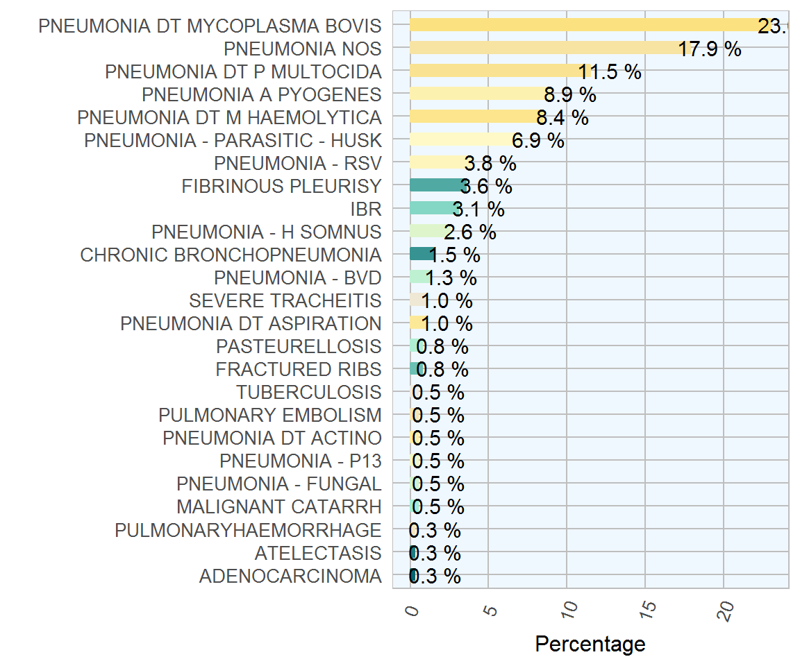

Chapter 6 Bovine Abortions
| Category | Count | Percentage |
|---|---|---|
| Toxoplasma gondi | 74 | 30.3 |
| No significant agent identified. | 67 | 27.5 |
| Chlamydophilia abortus | 44 | 18.0 |
| E.coli | 20 | 8.2 |
| Campylobacter spp | 12 | 4.9 |
| Streptococcus spp | 9 | 3.7 |
| Leptospirosis | 8 | 3.3 |
| Arcanobacter pyogenes | 5 | 2.0 |
| Listeria monocytogenes | 5 | 2.0 |

Figure 6.1: The conditions most frequently diagnosed on post-mortem examinations of ovine carcasses in 2017